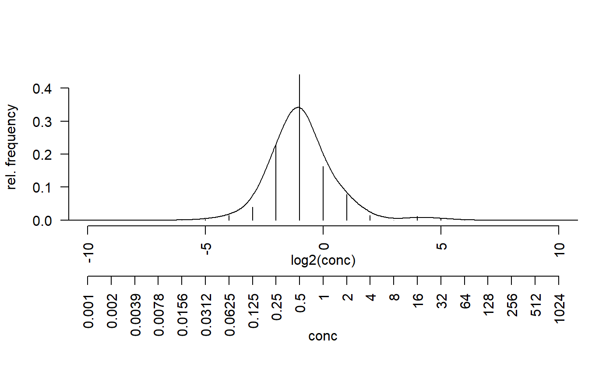
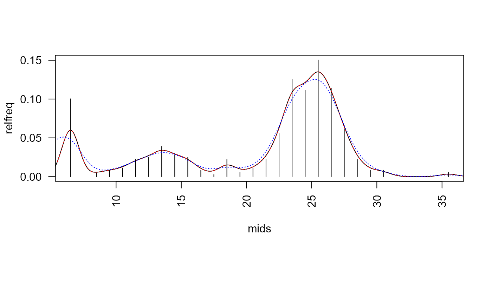

abr_densfunctions.RdEstimate kernel density for antibiotic resistance data using either standard
density estimation with Gaussian kernels or boundary corrected density estimation
with function pbckden from package evmix.
abr_density(x, cutoff = 5.5, method = c("density", "evmix"), control = abr_density.control()) abr_cumdens(x, cutoff = 5.5, method = c("evmix", "density", "spline", "fmm"), control = abr_density.control()) abr_density.control(bw = 1, cut = 3, n=512, bcmethod = "renorm", proper = TRUE) abr_cumdensquant(x, p = 0.5, cutoff = 5.5, method = c("density", "evmix", "spline", "fmm"), control = abr_density.control()) maxdens(x, cutoff = 5.5, from = min(x), to = max(x), method = c("density", "evmix"), control = abr_density.control())
| x | vector of antibiotic resistance observations, given as zone
diameter (zd) or log of minimum inhibitory concentration (mic).
Note that for |
|---|---|
| cutoff | cutoff value (disc diameter) in case of zd data |
| method | character which density method to use: |
| control | options passed to the density estimation methods, see |
| bw | the smoothing bandwidth to be used,
see |
| cut | by default, the values of from and to are cut bandwidths beyond
the extremes of the data, see |
| n | the number of equally spaced points at which the density is to be
estimated, see |
| bcmethod | character, boundary correction method |
| proper | logical, whether density is renormalised to integrate to unity |
| p | vector of probability quantiles |
| from, to | search range for maximum (= mode) search |
data frame with
x zone diameter resp. mic value
y density estimate
density, dbckden
opar <- par(no.readonly = TRUE) ## ===== minimum inhibitory concentrations (MIC) data ===== data("micdata") micdata$freq <- with(micdata, ifelse(is.na(freq), 0, freq)) par(las = 2, mar=c(9,4,4,2)+.1) ##' relative frequencies y <- micdata$freq / sum(micdata$freq) x <- log2(micdata$conc) plot(y ~ x, type = "h", axes = FALSE, xlab="", ylab="rel. frequency")axis(2)axis(1)## ===== zone diameter (ZD) data ===== freq <- c(36, 0, 2, 3, 4, 8, 9, 14, 10, 9, 3, 1, 8, 2, 4, 8, 20, 45, 40, 54, 41, 22, 8, 3, 3, 0, 0, 0, 0, 2) relfreq <- freq/sum(freq) bins <- 5 +(1:length(freq)) mids <- bins + 0.5 plot(mids, relfreq, type="h")## ----- standard R function ----- edf <- density(mids, weights=relfreq, bw=2/3, from=0, to=40) lines(edf)## ----- same, but with different interface ----- edf2 <- abr_density(unbin(mids, freq), control=list(bw=2/3)) lines(edf2, col="red", lty="dotted")## ----- boundary corrected density from package evmix ----- bcd <- abr_density(unbin(mids, freq), method="evmix") lines(bcd, col="blue", lty="dotted")#> final solution#> $x #> [1] 25.24166 #> #> $y #> [1] 0.1259965 #>#> Warning: collapsing to unique 'x' values#> Warning: collapsing to unique 'x' valuespar(opar)